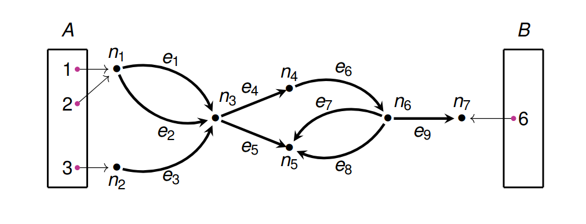

Lecture 10: Applied Colimits
$$
$$
Our goal for the next couple lectures is to learn how to compose open graphs.
An open graph is a graph \(G\) along with an input set \(I\) and an output set \(O\) and maps \(i \colon I \to G(V)\), \(o \colon O \to G(V)\).

We want to make a category where the objects are finite sets and the morphisms are open graphs between the finite sets.
We are going to build up the technology for this category in parts. The first step is defining what a cospan category is. The second step is going to generalize this.
A cospan in a category \(\mathsf{C}\) from an object \(X \in \mathsf{C}\) to an object \(Y \in \mathsf{C}\) is a diagram of the form
Let \(\mathsf{C}\) be a category that has pushouts. Then define the category \(\operatorname{Csp}(\mathsf{C})\) in the following way. The objects of \(\operatorname{Csp}(\mathsf{C})\) are the objects of \(\mathsf{C}\), and a morphism from \(X\) to \(Y\) is a cospan from \(X\) to \(Y\). Composition of two cospans

is given by the pushout
What is the identity in this category? I claim that the identity on \(X\) is
Let’s prove that this is the case. Suppose that we have another cospan
Then their composition is
I want to show that \(A = X +_{X} A\), and that the two upper morphisms are \(f\) and \(1_A\) respectively.
Immediately here, alarm bells should be going off in your head. Showing that two objects in a category are equal is almost always the wrong thing to do! Instead, one should show that two objects are isomorphic. But in this case, these “objects” are serving the purpose of morphisms, and morphisms need to be equal “on the nose”! So what do we do?
We have to redefine \(\operatorname{Csp}(\mathsf{C})\). There are two ways of doing this. One is that we can consider a notion of morphism between morphism, which gets us into bicategories. But we choose to not walk that route today.
The second way is to make a morphism from \(X\) to \(Y\) be an equivalence class of cospans.
The two cospans
and
are equivalent when there exists an isomorphism \(\phi \colon A \to A'\) such that
commutes.
We then redefine \(\operatorname{Csp}(\mathsf{C})\).
The category \(\operatorname{Csp}(\mathsf{C})\) has as objects, objects of \(\mathsf{C}\), and as morphisms equivalence classes of cospans.
Given two morphisms \(E_{1} \colon X \to Y\) and \(E_{2} \colon Y \to Z\), we compose them by picking a cospan from \(E_{1}\), a cospan from \(E_{2}\), taking their pushout, and then taking the equivalence class of all morphisms equivalent to that pushout.
There’s something very important that we have to check for this to work: we have to check that composing equivalent cospans give equivalent results! Proving this will enable us to flex some of our theoretical muscles for pushouts.
Suppose that we have the following commuting diagram:

where \(\phi\) and \(\psi\) are isomorphisms. Then there is an isomorphism \(\phi +_Y \psi \colon A +_Y B \to A' +_Y B'\) such that the diagram
commutes.
Proof. This is our first big serious proof in category theory, so before we get started, let’s just make sure we understand where we are and where we’re going.
The diagrams above look big and scary, but when we chunk them, they aren’t so bad. We have two pairs of equivalent cospans: two equivalent cospans between \(X\) and \(Y\), and two equivalent cospans between \(Y\) and \(Z\). Then we’ve composed each one, to get the top and bottom of the diagram, and finally the curved arrow is an isomorphism between the composed cospans.
Often in proofs like this, it is hard to know where to start. One good thing to do is to go back to definitions.
Let \(\mathsf{D}\) be the category that looks like this
Let \(F, F'\) be functors from \(\mathsf{D}\) into \(\mathsf{C}\) that send
to

and
respectively.
Then recall that the pushout of the diagram \(F\) is a representing object for the functor
\(X \mapsto \operatorname{Hom}_{\mathsf{C}^{\mathsf{D}}}(F, \Delta X)\)
which sends an object \(X\) to the set of natural transformations from \(F\) to the constant functor at \(X\), i.e. commuting diagrams
which are the same as commuting squares
Now, I claim that if we can show that \(F\) and \(F'\) are naturally isomorphic functors, then the pushout of \(F\) and the pushout of \(F'\) will be isomorphic as well.
This is because if \(F \cong F'\), then \(\operatorname{Hom}_{C^{\mathsf{D}}}(F, \Delta-) \cong \operatorname{Hom}_{C^{\mathsf{D}}}(F', \Delta-)\), and representing objects of isomorphic functors are isomorphic. I’m not sure if we’ve proved that explicitly by now; it’s a consequence of the Yoneda lemma, but it should be intuitive!
To show that \(F\) and \(F'\) are naturally isomorphic, we must construct a natural isomorphism. This consists of an isomorphism \(F(x) \cong F'(x)\) for each \(x \in \mathsf{D}\), chosen to satisfy the naturality condition. But we are given exactly what we need by our assumption! Namely, we make the following natural isomorphism:
Now, through what some might call “abstract nonsense”, we have summoned an isomorphism from \(A +_{Y} B\) to \(A' +_{Y} B'\): we will call this isomorphism \(\phi +_{Y} \psi\).
This is not enough though: we still have to show that the whole diagram commutes! Unfortunately, I can’t think of a slick way to do this quickly, so instead I will summarize the strategy. Basically, you have to trace through the proof that isomorphic functors give isomorphic representing objects, and you will see that the construction of the isomorphism shows that this should commute.